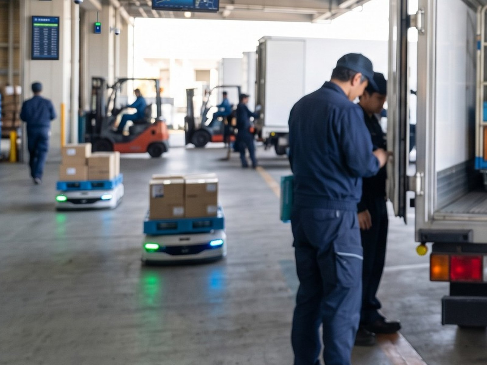
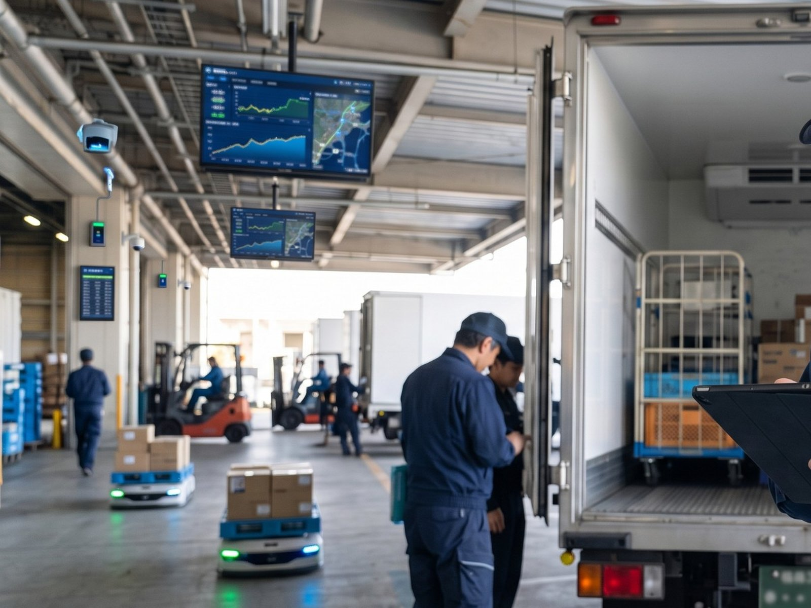

INTERVIEW
DTS運送課・千葉営業所 所長
運ぶだけではない。物流を、止めない仕事。
PROFILE STORY
01CAREER STEP
これまでのキャリア
物流現場の仕分け、派遣営業、4tと10tのドライバー。立場を変えながら、荷物を動かす側と、仕事を取ってくる側の両方を経験してきた。いまは千葉営業所の所長。年月はこのあとの年表に。
02JOINING REASON
PALに入社した理由
人との出会いが、きっかけだった。現場であるPAL社員と初めて会い、非常に熱い方だと感じた。その後、担当営業の方から声をかけてもらい、面接を受けて入社を決めた。
03WORK PHILOSOPHY
仕事で大切にしていること
まず動く。分からないことは、相談する。運行については、まずやってみる。そのうえで、本部長やほかの管理者に相談する。
01
CURRENT WORK
配送だけでなく、
運行そのものを組み立てる。
普段どのような仕事を担当していますか？
お客様とのやり取り、配車や配送計画、売上管理、ドライバーの管理などを担当しています。新規営業も行っています。
どの車両をどう動かせば、その日のお客様の配送が成立するのか。千葉営業所の所長として、そこを決めるのが今の仕事です。
新規営業も、配車も、配送計画も、同じ担当範囲です。自分で獲得した運行を、自分で配車に組み込みます。
編集部より
DTSは、PALのなかで輸送・運行を担う事業部です。配送業務と納品対応、車両点検と運行前後の確認、安全運転・配送品質の維持、配車と運行状況の確認・調整、配送先や物流センターとの連携を担当しています（出典：仕事を知る／DTS・運送・運行）。千葉営業所は、その拠点のひとつです。
千葉営業所で担当していること。
- 01お客様とのやり取り
- 02配車
- 03配送計画
- 04売上管理
- 05ドライバーの管理
- 06新規営業

02
CAREER
仕分けから営業へ。
営業からドライバーへ。
入社前から現在までのご経歴を、年・担当業務・変化が分かる形で教えてください。
2018年9月まではPALの派遣スタッフとして、物流現場で仕分け業務を担当していました。荷物を仕分ける側から、PALとの関わりが始まっています。
入社後に担当したのは派遣営業で、主に新規営業です。そこから運送部へ移り、4tドライバーとして実際に配送を担当。その後、10tドライバーとして大型車両の運行を担当しました。
仕分け、営業、ドライバー、そして営業所長。いま担当している仕事には、そのどれもが関わっています。
編集部より
このキャリアはK.Y個人の経歴です。PALの正式なキャリアパスとして、ドライバーから営業所長への昇進が約束されているわけではありません。
人との出会いが、PALに入るきっかけだった。
PALに入社したきっかけを教えてください。
入社の決め手は、現場であるPALの社員の方と初めてお会いして、非常に熱い方だなと感じたことです。
その後、担当営業の方からPALへお誘いの話をいただき、その方との面接がきっかけで入社しました。
これまでのキャリア。
- 〜2018.9PAL派遣スタッフ
物流現場で仕分け業務を担当。
- 2018.10PAL入社・派遣営業
主に新規営業を担当。
- 2022.4運送部・4tドライバー
配送業務を担当。
- 202410tドライバー
大型車両の運行を担当。
- 2025.10千葉営業所 所長
営業所の運営を担当。
VALUE
新規営業で獲得した運行を、
配車に組み込み、バッチリ決まった時。
03
DISPATCH
新しい運行を、
配車の中へ組み込む。
今の仕事で、最も面白いと感じる瞬間は？
新規営業で獲得した運行を、配車に組み込み、バッチリ決まった時です。
自分で取ってきた仕事を、自分の営業所の運行として走らせるところまで見られます。
まず動く。分からないことは、相談する。
予定どおりにいかないとき、どう判断していますか？
運行に関しては、まずやってみます。
そのうえで、本部長やほかの管理者に相談しまくっています。

04
SAFETY
時間や品質以上に、
難しいのは安全管理。
時間・品質・安全のなかで、一番難しい管理は何ですか？
1番は安全管理です。
時間や品質と違い、ドライバー個々の意識や行動に左右される部分が大きいところが理由です。
事故を未然に防ぐための継続的な教育と、意識づけを続けていくことが難しいと感じています。
05
DATA
運行を、
データでも確認する。
DTSのシステムや運行データを、実際の業務でどのように活用していますか？
運行時間や待機時間を見ています。モニターでのチェックも行っています。
PALの運送部だからこそ経験できる仕事や、一般的な運送会社との違いは何だと思いますか？
携帯端末での日報管理や勤怠、同じ時間帯に走っているドライバーの位置情報などです。
06
TEAM
営業所の中でも、
部署を越えて話せる。
PALらしいと感じるのはどんなときですか？
営業所内には他部署の社員の方もいらっしゃいます。連携や業務相談などは円滑に行えていると思います。
一緒に働くメンバーや職場の雰囲気について教えてください。
ドライバーさん同士でも、共有や仕事内容の相談を気兼ねなくしあっています。
年齢層も幅広いですが、年齢に関係なく仕事をしています。
07
FUTURE
車両も、
営業所も、もっと広げたい。
今後、PALの運送事業をどのように広げていきたいですか？
今後は、新規顧客の獲得を進めながら、営業所の拡大やトラックの増車にも取り組んでいきたいです。
保冷車両だけでなく、常温ウィング車両やトレーラーなど、これまでとは違う運送にも挑戦してみたいと思っています。
編集部より
ここに挙げた内容は、K.Y本人が語った希望・目標です。決定した事業計画や、すでに実施している取り組みを示すものではありません。
こんな人と働きたい。
どのような人がDTS事業部の仕事に向いていると思いますか？
プロドライバーとして安全に運行できる方です。
そして、お客様の大切な荷物を大切に扱ってくれる方だと思います。
A DAY IN THE LIFE
DTSドライバーの1日。
ここで紹介しているのは、DTSのドライバーの一日の流れの一例です。K.Yが現在担当している営業所長の仕事とは異なります。勤務時間や勤務形態を、PAL全社や各部門の制度として示すものではありません。
- 出勤・点呼
- 車両点検・出庫
車庫で車両を点検し、出庫する。
- 荷積み・店舗配送・回収
センターで荷積みし、店舗へ配送。回収と、回収した荷物の荷下ろし。
- 荷積み・店舗配送・センター配送・回収
センターで荷積みし、店舗配送とセンター配送。回収した荷物の荷下ろし。
- 給油・洗車・帰着点呼・退勤
MESSAGE
応募を考えている方へメッセージをお願いします。
自分の未来の姿を、
自分でつくって進んでほしい。
これから増車や、新しい営業所の展開など盛りだくさんです。まずは4tドライバーから、10tドライバーへステップアップ。
そのまま10tのプロドライバーを目指すのも、ドライバーから内勤になって運行管理者を目指すのも、ご自身の選び方次第です。
— K.Y / DTS事業部 運送課 千葉営業所 所長（2018年10月・中途入社）
RELATED
他の社員インタビューも見る
職種によって、仕事の進め方も向き合い方も違います。気になる仕事から、ほかの社員の話もご覧ください。